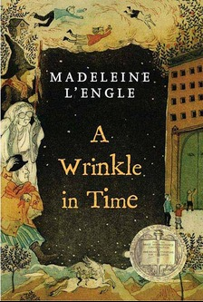
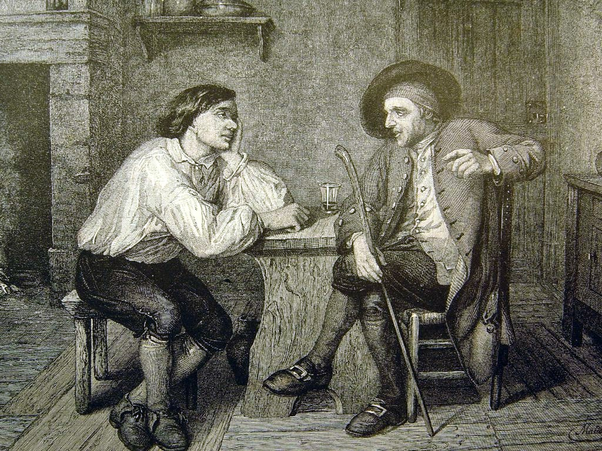
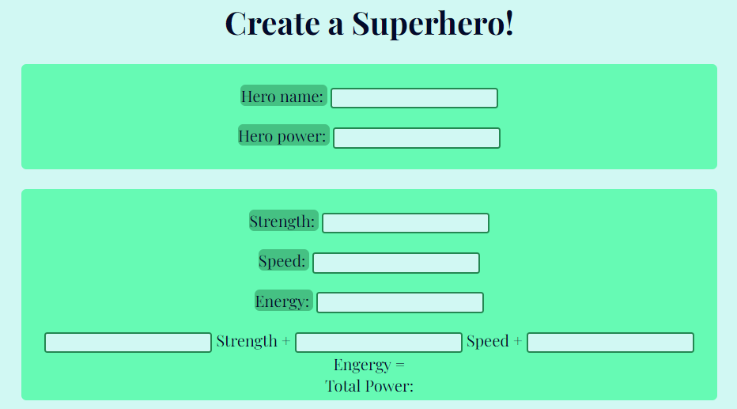

Home
Book Recommendations

This page highlights my favorite books, providing titles, authors, and why I like them.
CSS in Action

Behold a page with the gloriously painful overuse of CSS!
Mad Libs

Play Mad Libs using Javascript!
Superhero Maker

Make your own hero!